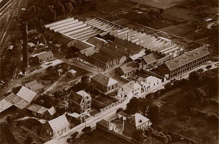

프랑스 명품 주방용품 브랜드 르크루제(LE CREUSET)는 무쇠 주물 전문가인 아르망 드사제르(Armand Desaegher)와 에나멜(Enamel, 법랑) 도색 전문가인 옥타브 오베크(Octave Aubecq)가 1925년에 공동으로 설립했다. 르크루제라는 이름은 프랑스어로 무쇠 주물을 상징하는 ‘크루제(Creuset)’와, 영어의 정관사 ‘더(The, 바로 그것)’에 해당하는 프랑스어 ‘르(Le)’가 결합된 것이다. 르크루제는 선명한 색상의 애나멜 무쇠 주물 냄비가 주력 품목이며, 창업 이후 90여 년이 지난 지금까지 전통적인 제조기법을 유지하고 있다. 현재 전 세계 80여개국에 진출해 있으며 주물 냄비시장의 70%이상을 점유하고 있다.
르크루제 창업자인 아르망 드사제르와 옥타브 오베크는 1924년 벨기에(Belgium)에서 열린 브뤼셀 국제 페어(Brussels International Fair)에서 만났다. 두 사람은 벨기에 출신으로 아르망 드사제르는 주물 전문가였고, 옥타브 오베크는 에나멜 도색 전문가였다.
1925년 아르망 드사제르와 옥타브 오베크은 각자의 전문성을 살려 주물ㆍ주방용품을 만들기로 하고, 프랑스 북부의 프레조아 르그랑(Fresnoy-le-Grand) 지역에 작은 무쇠 주물 회사를 세웠다. 이 지역은 완만한 구릉과 경작지로 이루어진 시골 마을로, 제품의 주 원료인 철과 모래, 코크스(Cokes)가 운송되는 중간 지점에 있어서 재료를 쉽게 구할 수 있었다. 이것이 오늘날 르크루제 브랜드의 시초가 되었으며 르크루제는1925년에 설립된 이래, 기능성과 아름다움을 모토로 다양한 에나멜 무쇠 주물 제품을 생산하고 있다.
브랜드이야기

창업 직후, 아르망 드사제르와 옥타브 오베크는 중세부터 전해져 내려온 전통적인 제조기법으로 무쇠 주물 냄비를 만들었는데, 무쇠를 구워내는 일은 주물 전문가인 아르망 드사제르가 맡았다. 하나하나 전통적인 수작업으로 만들어진 르크루제의 무쇠 냄비는 사용하기 쉽고 열전도율, 열보유율과 열효율이 뛰어나 음식 맛을 살려주었다. 또한 무쇠 냄비는 핸드메이드 제품에서 주는 소박함과 정감을 느낄 수 있었다. 아르망 드사제르와 옥타브 오베크가 공동으로 만든 첫 번째 제품은 프렌치 오븐(French Oven)이었다. 이 제품은 도가니 속에서 끓는 무쇠처럼 선명한 오렌지색을 띄고 있었는데, 이 색상이 오늘 날 르크루제의 시그니처 컬러(Signature Color, 대표색)인 Flame(플레임, 불꽃) 색상이다. 이 냄비는 지금까지도 꾸준히 출시되고 있다. 제 2차 세계대전 이후, 르크루제는 경쟁자들과 차별화되는 정체성을 확립하기 위해 무쇠 주물 제품에 주력하는 한편 품질 향상에도 힘썼다. 1957년에는 주요 경쟁사였던 꾸장스(Cousances)를 인수했는데, 이 업체는 1553년부터 무쇠 주물 제품을 생산해왔으며, 매우 높은 품질과 기술력을 보유하고 있었다. 르크루제는 꾸장스의 기술력과 생산공정을 그대로 흡수하며 무쇠 주물 시장에서 확고한 위치를 차지하게 되었다. 꾸장스의 제품들은 르크루제의 하위 라인으로 지금도 출시되고 있다. 1974년 르크루제는 미국 캘리포니아에 첫 해외지사를 열었다. 미국에서 ‘모든 훌륭한 요리사는 작은 프랑스를 알아야 한다(Every good cook should know a little French: Le Creuset)’라는 슬로건이 담긴 광고 캠페인을 펼친 후, 르크루제는 프랑스 요리를 대표하는 세계적인 브랜드로 이미지를 구축할 수 있었다. 1990년대부터 르크루제는 본격적으로 해외시장에도 진출했다. 1988년 영국을 시작으로, 1998년엔 홍콩, 1999년에는 스위스, 브라질, 스페인, 2003년에는 스칸디나비아, 2004년에는 이탈리아와 캐나다에 직영지사가 설립되었다. 르크루제는 주력 제품 이외에도 현지 문화를 반영하여 다양한 상품을 지역 시장에 출시했다. 가령, 이탈리아의 리소토(Risotto, 버터에 쌀을 넣고 살짝 볶은 뒤 뜨거운 육수를 부어 만든 요리) 냄비, 일본의 스키야키(쇠고기와 파 등 여러 가지 재료를 간장으로 맛을 내어 먹는 냄비 음식) 냄비, 모로코의 타진(Targin, 모로코어로 냄비라는 뜻으로, 이 냄비로 만드는 전통적인 찜 요리의 이름도 타진이라 불림) 냄비 등 세계 각국의 음식 문화를 반영한 제품들을 출시하고 있다.
1950년대 말부터 유행을 이끌 수 있는 색상을 제품 라인에 도입하면서 르크루제의 커뮤니케이션 전략에도 변화가 생겼다. 1955년 르크루제는 엘리제 옐로(Elysees Yellow) 색상 출시를 시작으로 제품 전면에 다양한 색채를 적용하기 시작했다. TV 요리 프로그램이나 유명한 요리사에게 제품을 협찬함으로써 ‘조리 후 테이블에 바로 놓아도 손색없을 정도로 색감과 디자인이 훌륭하다(From the Kitchen to the Table)’라는 메시지를 소비자들에게 전달했다. 또한 웹사이트를 통해 르크루제 제품으로 만들 수 있는 조림, 탕, 면 요리 등 70여 가지의 음식 조리법을 소개하고 있다.
- 1925
- 르크루제 설립, Octave Aubecq가 프랑스 북부 지방의 마을 Armand Desasgherrk에서 창업
- 1945
- 컬러 에나멜 개발(첫 번째 컬러-주황)
- 1958
- 산업디자인의 대부 ‘레이몬드 로웨이’가 디자인한 ‘꼬겔’ 모델 출시
- 1973
- 이태리 디자이너 ‘엔조 마리’가 디자인한 ‘마마’모델 출시
- 1999
- 스톤 웨어 출시, 텍스타일 라인 런칭

- 2005
- 설립 80주년 기념 ‘꼬겔’ 모델 다시 제작
- 1934
- 두프(Doufeu) 모델 출시
- 1955
- 첫 번째 그릴 모델 출시, 새로운 컬러 도입
- 1962
- 겨울 스포츠와 스키 시즌 트렌드에 따른 ‘퐁듀’ 모델 출시
- 1988
- 프랑스 월드컵 기념 축구공 모양의 냄비 제작

- 2003
- ‘ 센세이션 ’ 모델 콜렉션 런칭
- 2006
- 르크루제 한국 지사 런칭 설립